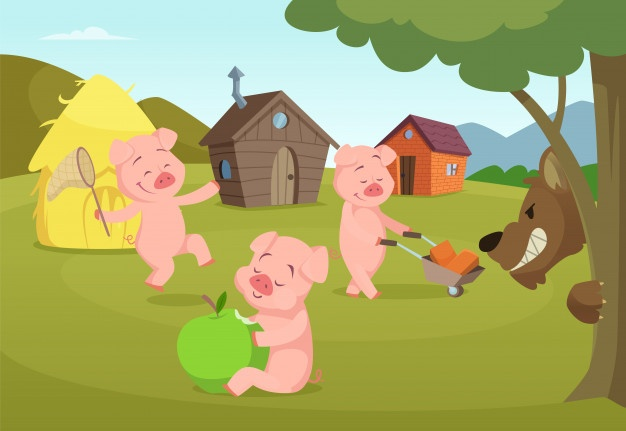

Los tres cerditos
En el bosque en el que vivían los tres cerditos había un gran revuelo. Al parecer, los pájaros habían
avisado a los ciervos de que un enorme lobo estaba a punto de llegar a sus tierras.
– ¡Un lobo! ¡Qué miedo! Eso significa peligro, tendremos que pensar en cómo librarnos de él – exclamó
el más pequeños de los tres cerditos.
Después de mucho pensar, los tres hermanos decidieron que lo mejor era construirse una casa donde
poder estar a salvo de las garras del lobo. Sin embargo no se ponían de acuerdo en la manera de
hacerla, así que cada uno decidió construir su propia casa.
El cerdito pequeño decidió hacer una casa con paja. Era mucho más fácil que hacerla
con otro material y así no le costaría mucho esfuerzo.
El cerdito mediano prefirió hacerla con madera. Era mucho más resistente que la
paja y como estaban en un bosque, la madera era fácil de conseguir. Además, tampoco le llevaría
mucho tiempo ni esfuerzo.
El cerdito mayor pensó que lo mejor sería hacerla con ladrillos. Es cierto que
aquello le llevaría mucho tiempo y esfuerzo, pero le pareció que solo si la casa era de ladrillos,
podría protegerle del malvado lobo.

– Como no te des prisa – le decían – llegará el lobo y no habrá servido de nada tanto esfuerzo, ya
que tu casa no estará terminada y no te quedará más remedio que venirte a la nuestra.
El lobo llega a las casas de los tres cerditos
Y es que el lobo llegó precisamente el día de su inauguración. Cuando el rumor de que el malvado
malvadísimo lobo había llegado al bosque, cada cerdito se escondió en su casa. ¡Qué miedo!. Para
colmo de males, aquella tarde se había levantado una fuerte tormenta. ¡Con lo poco que le gustaban a
los cerditos las tormentas! Muy asustado, el cerdito pequeño se asomó por la ventana de su caja de
paja.
El lobo sopló y sopló…

– ¡No es el viento lo que está tambaleando la casa! Es el lobo que está soplando…
Y antes de que se diera cuenta, la casa de paja se había desvanecido. El pequeño cerdito corrió y
corrió hasta la casa de su hermano mediano.
– ¡Ya está aquí otra vez! Empezará a soplar y a soplar…¡y derribará la casa!
Y antes de que hubieran terminado de decirlo, la casa de madera se había desplomado. Los dos cerditos
corrieron y corrieron hasta la casa de ladrillo del hermano mayor.
– Aquí estaremos a salvo – les protegió el cerdito mayor.
Los tres cerditos estan a salvo
– ¡Os lo dije! Las cosas bien hechas necesitan más esfuerzo, pero luego duran para
siempre…
Estaban tan contentos los tres cerditos en la casa de ladrillo, que casi se habían olvidado del lobo
y de la tormenta cuando un ruido les sobresaltó. Era el timbre, ¿quién llamaría a esas horas en una
tarde tan desapacible?
– ¡Es el lobo! – exclamó asustado el hermano mayor cuando miró por la mirilla de la
puerta.
– Sí, soy el lobo – exclamó el animal que había escuchado lo que el cerdito había
dicho.
– Pues fuera de aquí, ya has destruido dos casas, pero esta no conseguirás tirarla.
El lobo suspiró con tristeza y exclamó:
– ¿La casa de paja y la casa de madera? Yo no tuve nada que ver con eso. Estaban tan
mal construidas que la propia tormenta acabó con ellas.
– Soy nuevo en el bosque, y he venido a invitar a todos los animales a una gran
fiesta. Así podremos conocernos…
– Querrás decir que podrás comernos…
– ¿Por qué decís eso? No sabéis nada de mí y sin embargo ya dais por hecho que soy un
lobo malo. Es mas no soy como los demas lobos, yo soy vegetariano
El lobo no era tan feroz
Los tres cerditos se miraron con miedo. ¿Podían confiar en aquel lobo? Para comprobar que era verdad
lo que decía, le pusieron una prueba. Y por debajo de la puerta, los tres cerditos le pasaron una
bandeja con comida. En un plato había un suculento trozo de carne. En el otro una ensalada bien
fresca. El lobo no dudó ni un instante, cogió el tenedor y comenzó a comerse la ensalada.
Los tres cerditos comprendieron que aquel lobo no mentía y confiaron en él. Y así fue como aquel lobo
vegetariano se quedó para siempre en el bosque, y él y los tres cerditos (que terminaron viviendo
todos juntos en la casa de ladrillos) fueron amigos para siempre.
FIN